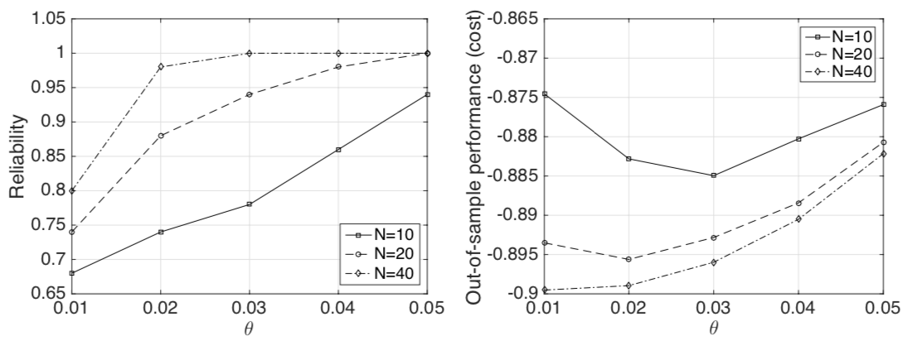
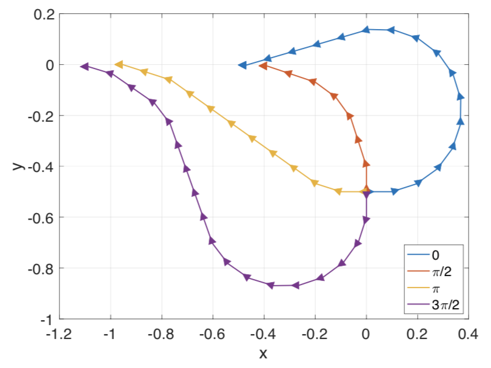

CDC21:dr
Toward improving the distributional robustness of risk-aware controllers in learning-enabled environments. Astghik Hakobyan, and Insoon Yang. Proceedings of the 60th IEEE Conference on Decision and Control (CDC), pp. 6024-6031, 2021.

TAC: Data-driven Wasserstein distributionally robust stochastic control
The paper “ Wasserstein distributionally robust stochastic control: A data-driven approach, ” authored by Insoon Yang, has been accepted for publication in the IEEE Transactions on Automatic Control . This paper proposes the theory, algorithms, and ...

JOTA: Convex optimization approach to dynamic programming in continuous state and action spaces
The paper “ A convex optimization approach to dynamic programming in continuous state and action spaces, ” authored by Insoon Yang, has been accepted for publication in the Journal of Optimization Theory and Applications (JOTA) . ...
JOTA: convex DP
A convex optimization approach to dynamic programming in continuous state and action spaces. Insoon Yang. Journal of Optimization Theory and Applications (JOTA), vol. 187, pp. 133-157, 2020.
ECE M.S. Thesis Award: Astghik Hakobyan’s “Risk-Aware Distributionally Robust Optimization for Learning-Based Autonomous Systems”
Astghik Hakobyan wins the best ECE M.S. thesis award. Her thesis, entitled “Risk-Aware Distributionally Robust Optimization for Learning-Based Autonomous Systems,” has been evaluated as “excellent, very creative research that draws upon concepts from mathematical finance (conditional ...